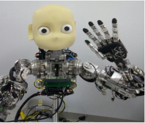

Autonomous Systems (CSAI, Tilburg University)
Spring 2023, Spring 2024, Spring 2025, Spring 2026
This course presents the fundamental principles of autonomous systems, exploring cognitive/developmental and social robotics perspectives. The course is structured into two main parts: theoretical and practical. In the theoretical section, we will introduce essential concepts such as multimodal integration, embodiment, control architectures, etc. In the practical section, students will have hands-on experience in building a simple autonomous hardware agent. Additionally, students will be able to develop a similar agent in a simulation environment, such as PyBullet or Gazebo. Through developing real and virtual autonomous agents, students make critical judgments and comparisons between two agent types.
